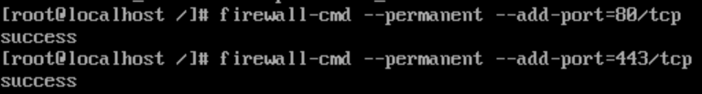

Installation d'un serveur Aapche HTTPD
Installation
- Mettre à jour les paquets
sudo yum update
- Installer la paquet httpd
sudo yum install httpd
- Lancer Apache
sudo systemctl start httpd
- Lancer apache au démarrage
sudo systemctl enable httpd
- Checker le status
sudo systemctl status httpd

- Ajouter les règles dans la parfeu
Par defaut CentOS empeche le traffic entrant vers 80 et 443
sudo firewall-cmd ––permanent ––add-port=80/tcp
sudo firewall-cmd ––permanent ––add-port=443/tcp

- Recharger le par feu pour appliquer les changements
sudo firewall-cmd ––reload
- Done !

Configuration
-
Les fichiers de configuration sont situé : /etc/httpd
-
Le fichier de config principal est situé : /etc/httpd/conf/httpd.conf
-
Les autres fichiers de configurations doivent :
- se terminés par .conf
- s'inclure dans le fichier de conf principal
-
se situer : /etc/httpd/conf.d/
-
Il est possible d'ajouter des fonctionnalités à apache via des modules :
-
Chemin : /etc/httpd/conf.modules.d/
-
Logs
- chemin : /var/log/httpd/
Commandes administration
- Stopper le service apache
sudo systemctl stop httpd
- Démarrer le service apache
sudo systemctl start httpd
- Redémarrer le service apache
sudo systemctl restart httpd
- Lancer apache au démarrage
sudo systemctl enable httpd
- Retirer apache au démarrage
sudo systemctl disable httpd